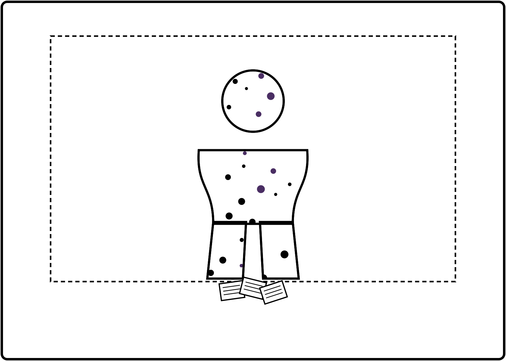

bubble-tea-news-editor skill. Debut byline for
Design Editor Freya Wilcox (design-desk-dispatch), announced via a masthead
note before her first column, same treatment Kate Rodgers got in Issue 7. No Menace Watch
this issue — ran Issue 7, not due again until roughly Issue 11. Debut of
the-boba-side-cartoon, added to this issue's back page after initial
publication — Freya slotted it into the spread herself.
Masthead · Now Joining Our Pages
This issue marks the first byline for Freya Wilcox, who has quietly run this paper's actual layout — the grid, the mastheads, the ad-box spacing — since Issue 1, and is only now stepping in front of the copy herself. The occasion: an adopted cat, a new relationship with a volunteer at the Kowhai Bay Animal Shelter, and a correlation study nobody has yet talked her out of running. Her first Design Desk column runs opposite. Welcome, Freya.
Home Front · Sebastian's Watch
The little red flag had sat crooked for six months, tripping half-up on its hinge every time the post went in, and Sebastian, unprompted, unpaid, took it fully apart on the back step to find the one bent tab responsible. Realigned it with the flat of a butter knife, the closest tool at hand to a proper smithing hammer. It sits true now. Nobody in this house has checked. He checks it anyway, most mornings, on the way to the bin.
Investigations · Case File
Design Editor Freya Wilcox's front-page correlation write-up uses, nearly verbatim, the same "n=, MOE, cross-tab" phrasing this desk has only ever seen in one other place: Priya Anand's Pearl Index reports, two desks over. Confronted, Wilcox says she "absorbed the format via osmosis, sitting near the printer." This desk finds that about as convincing as the CSS property names it has spent two months tracking down elsewhere. Filed, pending an actual conversation between the two of them.
Bubble Tea Trivia
The world's largest bubble tea, a real Guinness World Record, was assembled in Taiwan in 2017 and held roughly 8,000 litres — enough tea that the pearls had to be delivered to the cup by crane.
"That's not a printing error. That's a paw print my own layout software refuses to remove."— Freya Wilcox, on this issue's ad boxes
Joke of the Week
Why did the cat refuse to try bubble tea? It heard there'd be a large pearl count and had no intention of sharing the attention.
26–27 Sept · NZ International Convention Centre. Cosplay, artists & guests incl. Ladybeard, Chelsey Furedi & Rin Sakura. Tickets: overload.co.nz — about three weeks out.
Books · The Duckworth Scale
"Th' Return Voyage" opened at a four, honethtly earned, right up until the captain — clearly baThed on me, dathhing, underappreciated — handed command to a first mate for "tactical reathons" in chapter eight. Withdrew a full point on the thpot. Reinthtated it in the epilogue when it turned out the captain had been right all along and everyone thaid tho, out loud, on the page. Five Duckworths. I am thatisfied. Rarely.
Field Notes · Sanctuary
0610. Enclosure nine, adult male, no change worth logging, which used to feel like failure and now just feels like Tuesday. I spent eleven years measuring exactly how long extinction takes. I have stopped measuring how long trust takes. Some totals are better left running in the background.
Puzzle of the Week
Last week's Short Till, resolved in full: testing each of the three as the culprit, only naming Ana keeps the count of true statements at exactly one — Cy's line about Beti lying. Naming Beti or Cy each produce two true statements at once, which the puzzle's own rule rules out. Ana shorted the till.
Freya's three highest-registration suburbs — Ashgrove, Birchfield and Kelburn — rank 1st, 2nd or 3rd for cat registrations.
Brisk warm-up · which suburb ranks third? Answer next week — Ken Endo
Six weeks, council filings vs Pearl Index sales. Not peer reviewed. Not going to be.
Classifieds · Te Mana Whakaatu Framework (parody, non-affiliated)
FOUND: One (1) tabby cat, answers to "Constable," currently asleep on the design desk's only spare keyboard. R13. Contains mild peril (an unfinished front page) and coarse language directed at an inanimate object. FOR SALE: Scatter-plot-printed tea coasters, slightly water-damaged. G. Contains statistics, used responsibly. Ratings satire only; not affiliated with the real Classification Office of New Zealand.
In Memoriam
This paper's own back page once carried, in the space now occupied by a scatter plot, a perfectly ordinary advertisement. I am told its final booking went unfilled. I am told, separately, that Design Editor Freya Wilcox's correlation chart "simply needed somewhere to go." I find both stories equally unconvincing and admire the takeover regardless — a bloodless coup, executed in Pearl Index formatting, and nobody on staff even noticed until the ink was dry. That is how it should be done. Grieve the empty ad box. I've already filed the paperwork on its replacement.
Ask the Captain
"My partner has gotten really into her new hobby and I feel a bit left out." Sidelined, a woman charting new waters is not a woman leavin' ye behind — ask to see the map. I've known captains lost entirely to a new obsession who'd have stayed twice as close for one honest question about it. Ask. Don't sulk on the dock. Fair winds.
The Boba Side
